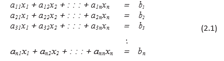
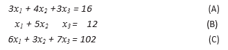
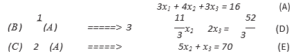
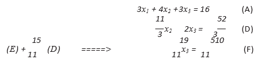

sistem persamaan linier merupakan salah satu model dan masalah matematika yang banyak dijumpai di dalam berbagai disiplin, termasuk matematika, statistika, fisika, biologi, ilmu-ilmu sosial, teknik, dan bisnis. Sistem-sistem persamaan linier muncul secara lang- sung dari masalah-masalah nyata, dan merupakan bagian dari proses penyelesaian masalah-masalah lain, misalnya penyelesaian sistem persamaan non-linier simultan.
Suatu persamaan dalam matematika merupakan sebuah ekspresi ke- samaan (memuat tanda sama dengan, “=”) yang melibatkan konstanta, variabel, dan operasi-operasi hitung/matematika.
Metode Eliminasi Gauss
Metode eliminasi Gauss digunakan untuk menyelesaikan sebuah sistem persamaan linier dengan mengubah SPL tesebut ke dalam bentuk sistem persamaan linier berbentuk segitiga atas, yakni yang semua koefisien di bawah diagonal utamanya bernilai nol. Bentuk segitiga atas ini dapat dis- elesaikan dengan menggunakan substitusi (penyulihan) balik.
Untuk mendapatkan bentuk SPL segitiga dari SPL yang diketahui, metode eliminasi Gauss menggunakan sejumlah operasi baris elementer (OBE):1. Menukar posisi dua buah persamaan (dua baris matriks augmented)
2. Menambah sebuah persamaan (baris matriks augmented) dengan suatu kelipatan persamaan lain (baris lain)
3. Mengalikan sebuah persamaan (baris matriks augmented) dengan sebarang konstanta taknol.
Pemakaian operasi-operasi baris elementer di atas pada sebuah SPL tidak akan mengubah penyelesaikan SPL yang bersangkutan. Jelas bahwa penyelesaian sebuah SPL tidak tergantung pada susunan penulisan per- samaan, sehingga operasi baris nomor 1 dapat dipakai. Dalam setiap per- samaan, kedua ruas menyatakan nilai yang sama, sehingga operasi baris nomor 2 dapat digunakan. Demikian pula, operasi baris nomor 3 meng- hasilkan persamaan yang ekivalen.
Sekarang kita akan menjelaskan proses eliminasi Gauss ini melalui sebuah contoh. Perhatikan SPL
1. Eliminasi x1 dari persamaan (B) dan (C):
2. Eliminasi x2 dari persamaan (E):
